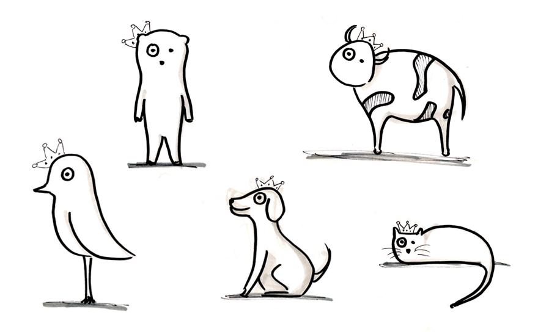
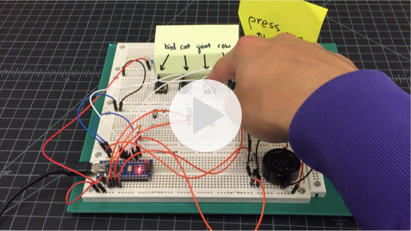
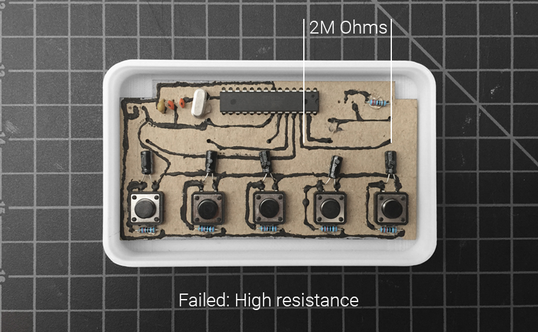
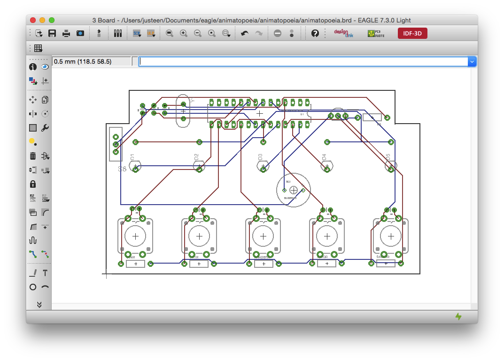

Animatopoeia is an handheld interactive device with which you can play an animal sound memory game. All start with a kit and it enhances your STEAM lessons by putting parts together and understanding the inside of consumer electronics. The flexibility of programming to different levels makes it fun for ones age 1 to infinity.
Looking at classic arcade games and exploring possiblities of this simple yet limited goal, I jot down some game concepts along with the interaction and implementation.
//interface design
With sole animal sounds and lights as the major feedbacks in the game, I work within the boundary of handheld size to place elements such as graphics and buttons.
Having a direction on the interface while keeping it loose, I can begin prototyping the hardware to making it interactive. Along the way, I also test the game several times facing the challenges of types of circuits, sound library, signal boosting and debounce methods.

The challenges remain to be keeping track of what the current state is, which button is pressed, whether there is an open spot in the recall array and when to match the pattern with the recall. Check out the Code on GitHub.
Then I start to tie pieces together by bringing in some form studies. I decide on the horizontal layout for its ergnomics as well as the information hierarchy it brings to the game.
Testing with different radius and dimensions begins to form something that looks more sleek, comfortable and friendly. I then 3D print the shell, button and a rough circuit board to further test the assembly side of the product.
Next is to fit all parts under the shell. I first try to make circuit board using conductive ink with parts mounted on a piece of chipboard for a quick PCB prototype, but I fail since later I find out the ink has resistance as high as 2 million Ohms.
Thus I go back to EAGLE for the PCB design. It takes a few passes to get correct the dimensions since I have to modify pad spacing for some particilar part. Then I use the circuit mill to cut out the traces and board. Check out the EAGLE file on GitHub.